คู่มือใช้งานเครื่องมือ · ระดับ Free
นำความร้อนทิ้งจากไอเสียกลับมาใช้
Waste Heat Recovery (WHR) Calculator
FREE
สำหรับช่างเทคนิคที่เพิ่งเริ่มงานอนุรักษ์พลังงาน — อ่านแล้วทำตามได้เอง
ใช้เวลาฝึกประมาณ 75 นาที
เคสตัวอย่าง: โรงงาน A เตาอบชิ้นงาน LPG 8 kg/hr ไอเสีย 745 °C
อ.หนึ่ง กลับทวี / Aj. Nueng Klubtavee
tripleeenergytools.com
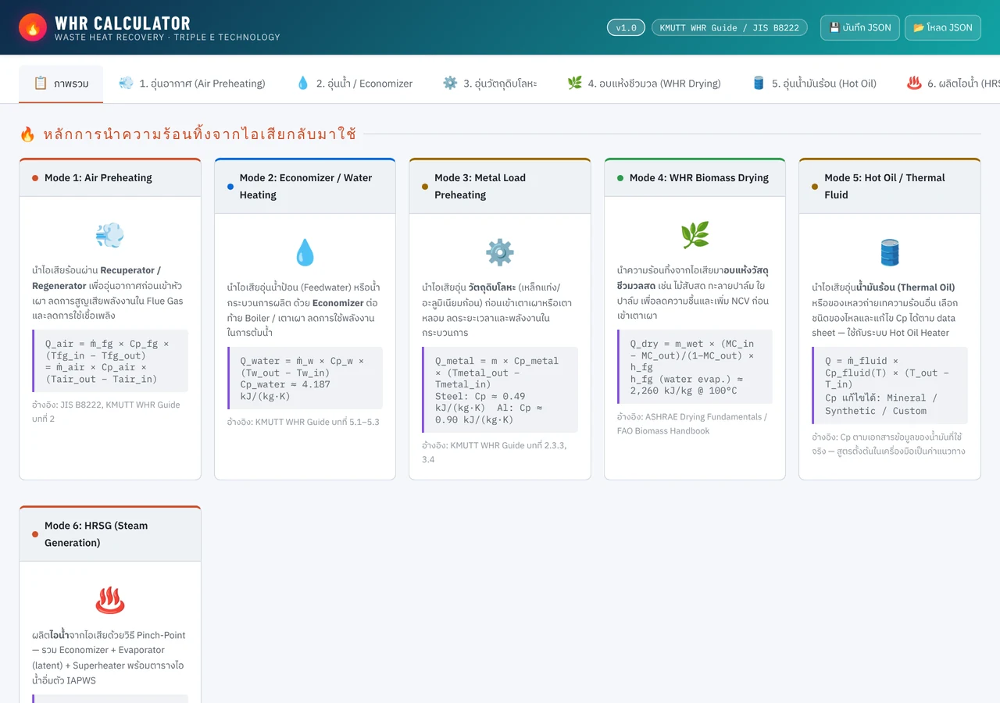
หน้าจอเครื่องมือ — เปิดได้จากเมนู Free ของเว็บไซต์
รุ่นเครื่องมือ: Free commit 09f6173 · จับภาพ 25 พ.ย. 2569 · คู่มือ Rev03
เครื่องมือนี้ตอบคำถามอะไร
คู่มือใช้งาน · คำนวณการนำความร้อนทิ้งกลับมาใช้ (WHR) (Waste Heat Recovery (WHR) Calculator) · ระดับ Free
2 / 33
| คำถามหน้างาน | แท็บที่ใช้ | เคสโรงงาน A ได้ |
|---|---|---|
| ไอเสียของเตามีปริมาณและพลังงานเท่าไร | ภาพรวม (ข้อมูลร่วม) | 128.3 Nm³/hr · อากาศเกิน 25.0 % |
| ติด Recuperator อุ่นอากาศ ได้ความร้อนคืนเท่าไร | 1. อุ่นอากาศ | 10.27 kW · LPG 7,545 kg/ปี |
| ใช้ไอเสียอุ่นน้ำ / อุ่นชิ้นงาน / อบแห้ง / น้ำมันร้อน | แท็บ 2 – 5 | โลหะ 9.19 kW · ไอเสียออกจริง 222.2 °C |
| ผลิตไอน้ำจากไอเสียแหล่งใหญ่ (HRSG) | 6. ผลิตไอน้ำ | 4,355 kg/hr |
| ไอเสียออกต่ำเกินจนกรดกลั่นตัวไหม | ทุกแท็บ (ข้อความ ✅/⚠️) | ผ่านทุกแท็บ (≥ 120 °C) |
| ทั้งโครงการ ประหยัดเท่าไร คืนทุนกี่ปี ลด CO₂ เท่าไร | สรุปรวม | 231,219 บาท/ปี · 2.16 ปี |
| เลือกหลายมาตรการนับความร้อนซ้ำหรือไม่ | สรุปรวม (ตรวจสมดุล) | ใช้ 51.8 % ของไอเสีย |
💡 เคล็ดลับ
กรอกข้อมูลไอเสียร่วมในหน้าภาพรวมก่อน — ทุกแท็บรับ ṁ_fg และ Cp ไอเสียจากที่นี่ (ยกเว้น HRSG ที่เลือกแหล่งแยกได้)
แผนที่หน้าจอ
คู่มือใช้งาน · คำนวณการนำความร้อนทิ้งกลับมาใช้ (WHR) (Waste Heat Recovery (WHR) Calculator) · ระดับ Free
3 / 33
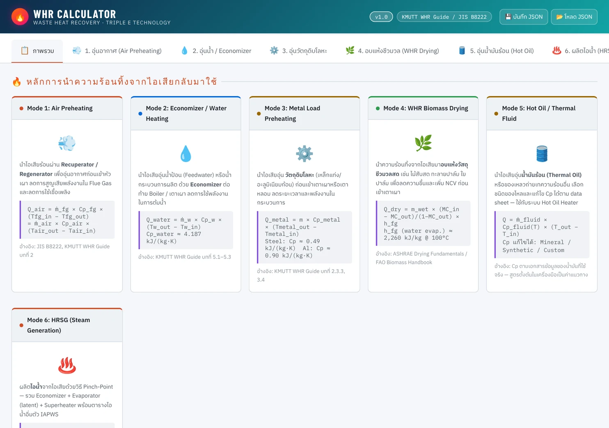
1
2
3
4
1
แท็บ 8 แท็บ — ภาพรวม · 6 วิธีนำความร้อนกลับ · สรุปรวม
2
บันทึก / โหลด JSON — เก็บงานทั้งชุด
3
หน้าภาพรวม — หลักการและข้อมูลร่วม
4
การ์ด 6 วิธี: สูตรหลักและแหล่งอ้างอิงของแต่ละวิธี
💡 เคล็ดลับ
เลื่อนลงในหน้าภาพรวมจะพบการ์ดข้อมูลไอเสีย (Flue Gas) — เริ่มกรอกที่นั่น
เปิดบนมือถือ สลับภาษา และป้ายสีข้างชื่อช่อง
คู่มือใช้งาน · คำนวณการนำความร้อนทิ้งกลับมาใช้ (WHR) (Waste Heat Recovery (WHR) Calculator) · ระดับ Free
4 / 33
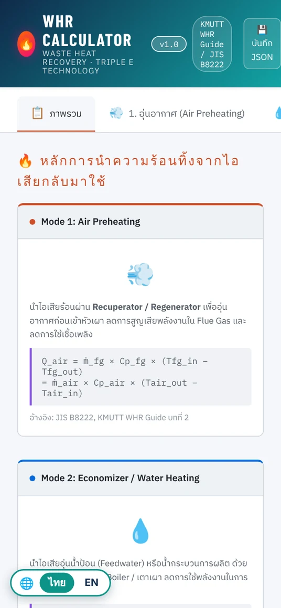
ใช้บนมือถือหน้างานได้ — การ์ดเรียงลงมาเป็นแถวเดียว · หน้าไม่กว้างเกินจอ (ปุ่ม บันทึก/โหลด JSON ขึ้นบรรทัดที่สองของหัวหน้า)
ปุ่ม 🌐 ไทย | EN ลอยอยู่ด้านข้าง กดสลับภาษาได้ ค่าที่กรอกไว้ไม่หาย
ป้าย วัดจริง = วัดหน้างาน · ออกแบบ = เป้าหมาย/สเปก · ตั้งค่า = เลือกเอง · คำนวณ = โปรแกรมเติมให้ (พิมพ์ทับได้)
ใต้ทุกช่องมีคำอธิบายที่มาของค่าและช่วงที่พบบ่อย
💡 เคล็ดลับ
จดค่าลงแบบฟอร์ม (สไลด์ 6) ที่หน้างานก่อน แล้วค่อยกรอก จะผิดน้อยกว่า
คำศัพท์ 8 คำที่ต้องรู้ก่อนเริ่ม
คู่มือใช้งาน · คำนวณการนำความร้อนทิ้งกลับมาใช้ (WHR) (Waste Heat Recovery (WHR) Calculator) · ระดับ Free
5 / 33
| คำ | ความหมายแบบสั้น | จำง่าย ๆ |
|---|---|---|
| ṁ_fg (Nm³/hr) | อัตราไหลไอเสียที่สภาวะมาตรฐาน 0 °C 1 atm — คำนวณจากเชื้อเพลิง + O₂ | ไอเสียมาก = ความร้อนมาก |
| อากาศส่วนเกิน | อากาศที่ป้อนเกินพอดี คิดจาก O₂ ในไอเสียแห้ง | O₂ สูง = ไอเสียมาก ร้อนน้อย |
| Cp ไอเสีย | ความจุความร้อนเฉลี่ยของไอเสีย (kJ/Nm³·K) ในช่วงอุณหภูมิของแต่ละแท็บ | ร้อนขึ้น Cp สูงขึ้น |
| Effectiveness ε | ความร้อนที่ได้จริง ÷ ความร้อนสูงสุดที่เป็นไปได้ | ไม่เกิน 100 % เสมอ |
| Approach / LMTD | ผลต่างอุณหภูมิระหว่างสองกระแส — ใช้ประเมินพื้นที่ HX | ห่างน้อย = HX ใหญ่ |
| Pinch (HRSG) | ไอเสียออก evaporator − อุณหภูมิน้ำเดือด | ต้องมากกว่า 0 เสมอ |
| ไอเสียออกต่ำสุด | ต่ำกว่านี้ไอน้ำ/กรดกลั่นตัวกัดกร่อน HX (U.S. DOE 2008) | ก๊าซ 120 · น้ำมัน/ถ่านหิน 150 °C |
| η ที่ถูกทดแทน | ประสิทธิภาพเตา/หม้อไอน้ำเดิมที่ความร้อนที่กู้คืนไปทดแทน | ความร้อน 1 kWh = เชื้อเพลิง 1/η |
💡 เคล็ดลับ
ค่าที่โปรแกรมเติมให้ (Cp · NCV · EF) แก้ได้ทุกช่อง — ระบุในรายงานว่าใช้ค่าจากที่ใด
เตรียมข้อมูลก่อนลงหน้างาน (แบบฟอร์มจดค่า)
คู่มือใช้งาน · คำนวณการนำความร้อนทิ้งกลับมาใช้ (WHR) (Waste Heat Recovery (WHR) Calculator) · ระดับ Free
6 / 33
| หมวด | ข้อมูลที่ต้องจด | เครื่องมือวัด / แหล่งข้อมูล | ค่าโรงงาน A |
|---|---|---|---|
| เชื้อเพลิง | ชนิด · อัตราการใช้ขณะวัด | มิเตอร์ก๊าซ/น้ำมัน · ชั่งน้ำหนัก | LPG · 8 kg/hr |
| ไอเสีย | O₂ แห้ง · อุณหภูมิออกเตา | เครื่องวิเคราะห์ก๊าซ · เทอร์โมคัปเปิล | 4.5 % · 745 °C |
| อากาศ | อุณหภูมิห้อง · อัตราไหลอากาศเผาไหม้ | เทอร์โมมิเตอร์ · pitot/ข้อมูลพัดลม | 33 °C · 115 Nm³/hr |
| อุปกรณ์ WHR | อุณหภูมิเข้า–ออกทั้งสองฝั่งของ HX | เทอร์โมคัปเปิล · แบบ HX | ไอเสีย 745→527 · อากาศ 33→275 °C |
| ด้านรับความร้อน | อัตราป้อนชิ้นงาน/น้ำ · อุณหภูมิเป้าหมาย | บันทึกการผลิต · สเปก | เหล็ก 300 kg/hr 25→250 °C |
| เวลาและเงิน | ชั่วโมงทำงาน/ปี · ราคาเชื้อเพลิง · η เตาเดิม · ต้นทุน HX | บันทึกการผลิต · บิล · ใบเสนอราคา | 8,000 ชม. · 18.5 บาท/kg · 85 % |
⚠️ ระวัง
ท่อไอเสียร้อนหลายร้อยองศา — วัดด้วยหัววัดที่มีด้ามยาว สวมถุงมือกันความร้อน และระวังก๊าซพิษรั่วที่รูวัด
ขั้นที่ 1
หน้าภาพรวม: กรอกข้อมูลไอเสียร่วม
คู่มือใช้งาน · คำนวณการนำความร้อนทิ้งกลับมาใช้ (WHR) (Waste Heat Recovery (WHR) Calculator) · ระดับ Free
7 / 33
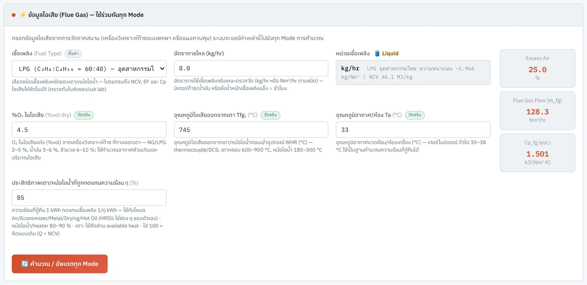
1
2
3
4
5
6
7
1
ชนิดเชื้อเพลิง — โปรแกรมเติม NCV · EF · องค์ประกอบไอเสียให้
2
อัตราการใช้เชื้อเพลิง ขณะตรวจวัด (ป้าย วัดจริง)
3
หน่วยเปลี่ยนตามชนิด: ก๊าซ Nm³/hr · น้ำมัน/ของแข็ง kg/hr
4
O₂ ในไอเสียแห้ง (%)
5
อุณหภูมิไอเสียออกเตา Tfg₁
6
อุณหภูมิอากาศ/ห้อง
7
η เตาที่ถูกทดแทนความร้อน — ใช้แปลงความร้อนเป็นเชื้อเพลิง
แก้อัตราเชื้อเพลิง · O₂ · Tfg · Ta แล้วโปรแกรมคำนวณใหม่ทันที และแสดงกล่องข้อความใต้ปุ่ม (ไม่มีหน้าต่างเด้ง) — สไลด์ถัดไป
เปลี่ยนชนิดเชื้อเพลิงแล้วกด คำนวณ / อัพเดตทุก Mode (สไลด์ถัดไป) · แก้ค่าในหน้านี้แล้วกดปุ่มคำนวณของแต่ละแท็บอีกครั้ง
ผลข้อมูลร่วม: อากาศเกิน · ปริมาณไอเสีย · Cp
คู่มือใช้งาน · คำนวณการนำความร้อนทิ้งกลับมาใช้ (WHR) (Waste Heat Recovery (WHR) Calculator) · ระดับ Free
8 / 33

1
2
3
4
5
1
อากาศส่วนเกิน 25.0 %
2
ṁ_fg 128.3 Nm³/hr — ไอเสียเปียกจากสมดุลการเผาไหม้
3
Cp 1.501 kJ/Nm³·K (ช่วง 150 → 745 °C)
4
คำนวณ / อัพเดตทุก Mode — ส่ง ṁ_fg และ Cp ไปทุกแท็บ
5
กล่องข้อความ: ค่าที่อัปเดต · แท็บที่รับค่าแต่ละตัว · แท็บที่คำนวณไว้แล้วต้องกดคำนวณใหม่
ṁ_fg คิดจาก CO₂ + H₂O + N₂ + O₂ ส่วนเกินของเชื้อเพลิงแต่ละชนิด — ทวนอิสระด้วย python ได้ตรงกันภายใน 0.1 %
Cp ใช้พหุนามก๊าซอุดมคติ ตรวจเทียบ NIST WebBook (N₂) และ CoolProp (O₂ CO₂ H₂O SO₂) ต่างไม่เกิน 1.2 %
💡 เคล็ดลับ
ถ้าวัดอัตราไหลไอเสียจริงได้ (pitot) ให้พิมพ์ทับช่อง ṁ_fg ในแต่ละแท็บ — ค่าที่วัดได้ดีกว่าค่าคำนวณ
ตารางเชื้อเพลิงอ้างอิงและ Emission Factor
คู่มือใช้งาน · คำนวณการนำความร้อนทิ้งกลับมาใช้ (WHR) (Waste Heat Recovery (WHR) Calculator) · ระดับ Free
9 / 33
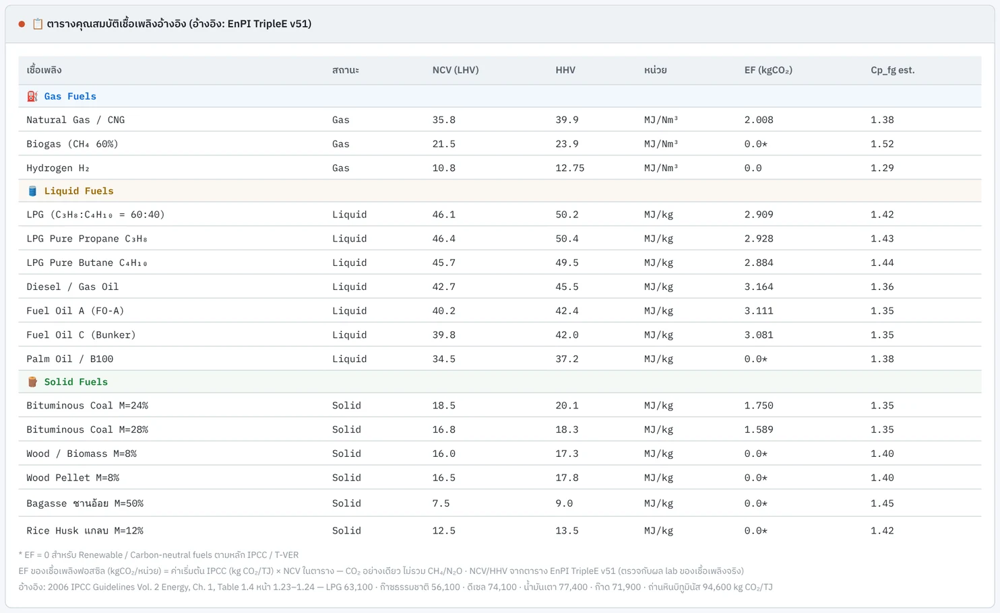
1
2
1
LPG 60:40 — NCV 46.1 MJ/kg · EF 2.909 kgCO₂/kg
2
ที่มาของ EF: ค่าเริ่มต้น IPCC 2006 (kg CO₂/TJ) × NCV
EF ของเชื้อเพลิงฟอสซิลจาก 2006 IPCC Guidelines Vol.2 Ch.1 Table 1.4 — LPG 63,100 kg CO₂/TJ × 46.1 MJ/kg = 2.909 kgCO₂/kg
ชีวมวล ก๊าซชีวภาพ ไบโอดีเซล EF = 0 (CO₂ ชีวภาพรายงานแยก)
NCV ก๊าซ/LPG คำนวณจากองค์ประกอบ · ของเหลว/ของแข็งตรวจกับช่วง IPCC Table 1.2 (คอลัมน์ขวาสุด) · ถ่านหินเป็น sub-bituminous ตามนิยาม IPCC — ใช้ผล lab เมื่อมี
⚠️ ระวัง
รายงานทางการ (CFO/T-VER) ให้ใช้ EF ที่ อบก./ผู้ทวนสอบกำหนด — พิมพ์ทับได้ในช่อง EF ของหน้าสรุปรวม
ขั้นที่ 2
แท็บ 1 อุ่นอากาศ (Recuperator): กรอกข้อมูล
คู่มือใช้งาน · คำนวณการนำความร้อนทิ้งกลับมาใช้ (WHR) (Waste Heat Recovery (WHR) Calculator) · ระดับ Free
10 / 33
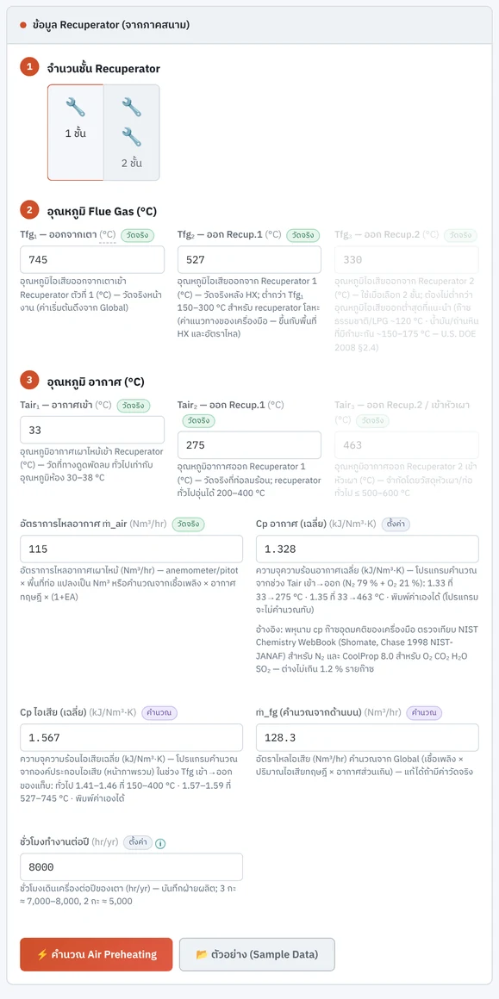
1
2
3
4
5
6
7
8
9
10
11
1
จำนวนชั้น Recuperator — 1 หรือ 2 ชั้น
2
Tfg₁ ไอเสียเข้า (รับจากข้อมูลร่วม)
3
Tfg₂ ไอเสียออก — วัดหลัง HX
4
Tair₁ อากาศเข้า (= อุณหภูมิห้อง)
5
Tair₂ อากาศร้อนออก
6
ṁ_air อัตราไหลอากาศ Nm³/hr
7
Cp อากาศ 1.328 — คำนวณให้
8
Cp ไอเสีย 1.567 — ช่วง 745→527 °C
9
ṁ_fg 128.3 (จากข้อมูลร่วม)
10
ชั่วโมงทำงาน/ปี
11
คำนวณ Air Preheating
Cp ช่องสีม่วงพิมพ์ทับได้ — ถ้าพิมพ์เองโปรแกรมจะไม่คำนวณทับ
ผลการคำนวณอุ่นอากาศ
คู่มือใช้งาน · คำนวณการนำความร้อนทิ้งกลับมาใช้ (WHR) (Waste Heat Recovery (WHR) Calculator) · ระดับ Free
11 / 33
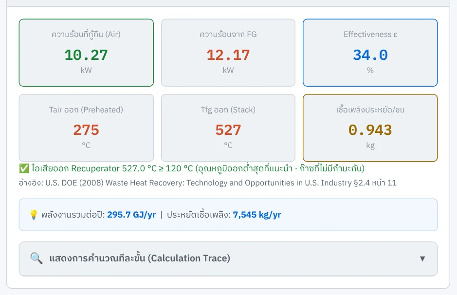
1
2
3
4
5
1
ความร้อนที่กู้คืน 10.27 kW — คิดจากฝั่งอากาศ
2
ความร้อนที่ไอเสียให้ 12.17 kW — ต้องไม่น้อยกว่าฝั่งอากาศ
3
ε 34.0 % — ไม่เกิน 100 %
4
ประหยัด LPG 0.943 kg/hr
5
ไอเสียออก 527 °C ≥ 120 °C — ไม่เสี่ยงกรดกลั่นตัว
ต่อปี 295.7 GJ · ประหยัด LPG 7,545 kg/ปี
ถ้าอากาศรับความร้อนเกินไอเสียให้ได้มากกว่า 10 % เครื่องมือจะหยุด — แปลว่าค่าที่วัดผิด
การคำนวณทีละขั้น — ทวนด้วยเครื่องคิดเลข
คู่มือใช้งาน · คำนวณการนำความร้อนทิ้งกลับมาใช้ (WHR) (Waste Heat Recovery (WHR) Calculator) · ระดับ Free
12 / 33
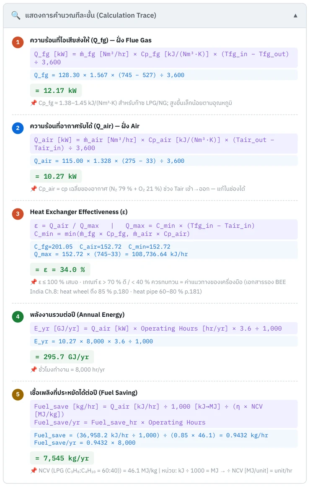
Q_air = 115 × 1.328 × (275 − 33) ÷ 3,600 = 10.27 kW
เชื้อเพลิง = 10.27 × 3.6 ÷ (0.85 × 46.1) = 0.943 kg/hr × 8,000 ชม. = 7,545 kg/ปี
ε = ΔT ฝั่งอากาศ ÷ (Tfg₁ − Tair₁) = 242 ÷ 712 = 34.0 % เพราะอากาศเป็นฝั่งที่ C (ṁ·Cp) น้อยกว่า
ตรวจซ้ำอิสระ (CoolProp + python): Q_air ต่างจากเครื่องมือไม่เกิน 0.7 %
💡 เคล็ดลับ
กดหัวกล่อง "แสดงการคำนวณทีละขั้น" เพื่อเปิด/ปิด — คัดลอกไปแนบรายงานได้
เลือกชนิด HX และประเมินพื้นที่
คู่มือใช้งาน · คำนวณการนำความร้อนทิ้งกลับมาใช้ (WHR) (Waste Heat Recovery (WHR) Calculator) · ระดับ Free
13 / 33
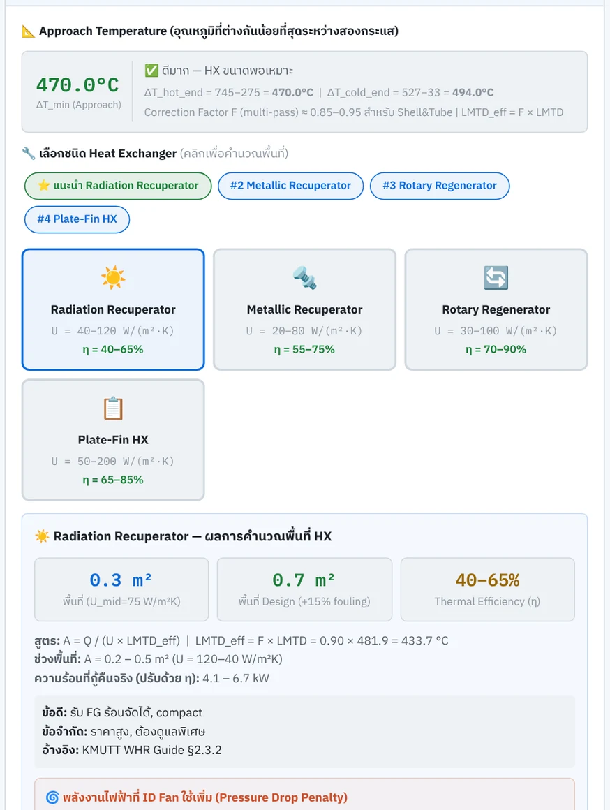
1
2
3
4
1
Approach ΔT_min 470.0°C — ผลต่างอุณหภูมิที่ปลายแคบสุด
2
ชนิดที่ไอเสียเข้าอยู่ในช่วงใช้งาน — ⭐ แนะนำ · ✗ นอกช่วง
3
กดการ์ดชนิด HX เพื่อคำนวณพื้นที่ใหม่
4
พื้นที่ 0.5 m² · ออกแบบ (+15 % fouling) 1.4 m²
ไอเสีย 745 °C อยู่ในช่วงทั้ง Metallic (121–871 °C) และ Radiation (649–1,093 °C) — แนะนำ Metallic Recuperator ก่อน เพราะกะทัดรัดกว่าและ effectiveness สูงกว่า (U.S. DOE 2015 · BCS 2008 · BEE)
A = Q ÷ (U × F × LMTD) — LMTD 481.9 °C · ช่วง U · η · ΔP ของชนิด = ค่าแนวทางของเครื่องมือ
ความร้อนที่กู้คืน 10.27 kW แสดงครั้งเดียว (ไม่คูณ η ซ้ำ) · ε ของการออกแบบ 34.0 % เทียบช่วง η ทั่วไป 55–75 %
⚠️ ระวัง
พื้นที่เป็นค่าประมาณเบื้องต้นเพื่อคุยกับผู้ขาย — ขนาดจริงต้องให้ผู้ออกแบบ HX คำนวณ
ไฟฟ้า ID Fan ที่เพิ่มจากความดันตกคร่อม HX
คู่มือใช้งาน · คำนวณการนำความร้อนทิ้งกลับมาใช้ (WHR) (Waste Heat Recovery (WHR) Calculator) · ระดับ Free
14 / 33
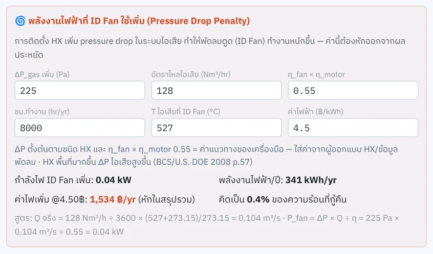
1
2
3
4
5
6
1
ΔP เพิ่ม 225 Pa — ค่าแนวทางของเครื่องมือตามชนิด HX
2
อัตราไหลไอเสีย (Nm³/hr)
3
η พัดลม × η มอเตอร์
4
ชั่วโมงทำงาน และ T ไอเสียที่พัดลม 527 °C
5
ค่าไฟ (บาท/kWh)
6
ไฟเพิ่ม 0.043 kW · 341 kWh/ปี · 1,534 บาท/ปี — หักในสรุปรวม
P = ΔP × Q จริง ÷ η — Q จริงแปลง Nm³ เป็น m³ ที่อุณหภูมิไอเสีย (ไอเสียร้อนพองตัว)
ใช้ ΔP จากใบเสนอราคา HX จริงเมื่อมี
ขั้นที่ 3
แท็บ 2 Economizer: อุ่นน้ำด้วยไอเสีย
คู่มือใช้งาน · คำนวณการนำความร้อนทิ้งกลับมาใช้ (WHR) (Waste Heat Recovery (WHR) Calculator) · ระดับ Free
15 / 33
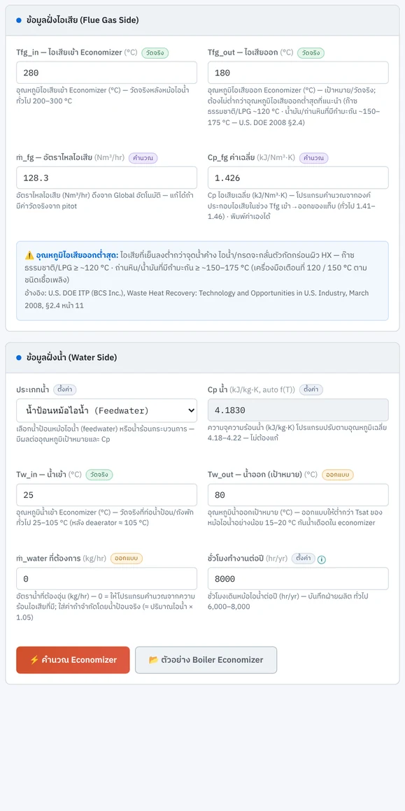
1
2
3
4
5
6
7
8
9
1
Tfg_in ไอเสียเข้า
2
Tfg_out ไอเสียออก (เป้าหมาย)
3
ṁ_fg จากข้อมูลร่วม
4
Cp ไอเสีย 1.426 ช่วงของแท็บนี้
5
ประเภทน้ำ — เติมอุณหภูมิตัวอย่างให้
6
Cp น้ำ 4.1830 จาก IAPWS-IF97
7
Tw_in น้ำเข้า
8
Tw_out น้ำออก (เป้าหมาย)
9
ṁ_water — 0 = ให้โปรแกรมหาจากความร้อนไอเสีย
กล่องเหลืองบอกเกณฑ์ไอเสียออกต่ำสุด พร้อมแหล่งอ้างอิง (U.S. DOE 2008 §2.4)
ผล Economizer และการตรวจไอเสียออก
คู่มือใช้งาน · คำนวณการนำความร้อนทิ้งกลับมาใช้ (WHR) (Waste Heat Recovery (WHR) Calculator) · ระดับ Free
16 / 33
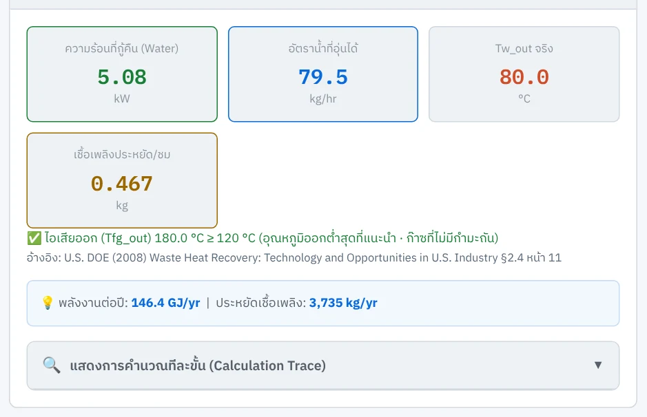
1
2
3
4
1
ความร้อนที่กู้คืน 5.08 kW
2
อุ่นน้ำได้ 79.5 kg/hr
3
Tw_out จริง 80.0 °C — คิดจากความร้อนที่ถ่ายเทได้จริง
4
ไอเสียออก 180.0 °C ≥ 120 °C (LPG ไม่มีกำมะถัน)
ถ้ากรอก ṁ_water เอง: ไอเสียไม่พอ → เตือนว่าน้ำออกได้จริงกี่ °C · น้ำรับได้น้อยกว่า → บอกไอเสียออกจริง (ใช้ตรวจกรดกลั่นตัว)
ประหยัด LPG 3,735 kg/ปี
⚠️ ระวัง
Economizer น้ำป้อนหม้อไอน้ำ: Tw_out ต้องต่ำกว่าจุดเดือดที่ความดันหม้อไอน้ำพอสมควร กันน้ำเดือดใน economizer
ขั้นที่ 4
แท็บ 3 อุ่นวัตถุดิบโลหะ: กรอกข้อมูล
คู่มือใช้งาน · คำนวณการนำความร้อนทิ้งกลับมาใช้ (WHR) (Waste Heat Recovery (WHR) Calculator) · ระดับ Free
17 / 33
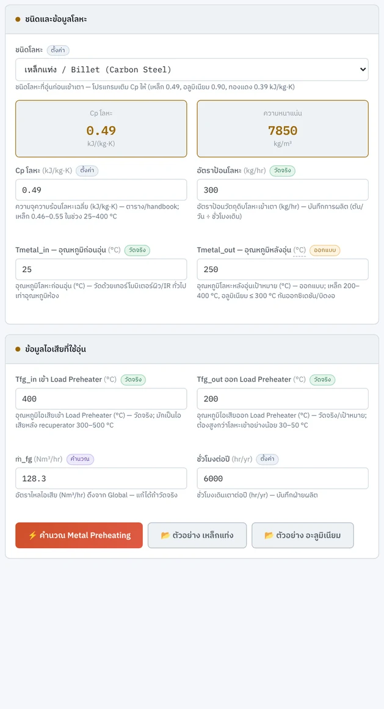
1
2
3
4
5
6
7
8
1
ชนิดโลหะ — เติม Cp และความหนาแน่น
2
Cp โลหะ (แก้ได้)
3
อัตราป้อนโลหะ 300 kg/hr
4
อุณหภูมิโลหะก่อนอุ่น
5
อุณหภูมิโลหะหลังอุ่น (เป้าหมาย)
6
ไอเสียเข้าห้องอุ่น 400 °C
7
ไอเสียออก (ค่าที่ออกแบบไว้)
8
ṁ_fg จากข้อมูลร่วม
โรงงาน A: ไอเสียหลัง Recuperator 527 °C เดินท่อมาถึงห้องอุ่นชิ้นงานเหลือ 400 °C — ช่วงอุณหภูมิไม่ทับกับแท็บ 1
ปุ่ม "ตัวอย่าง เหล็กแท่ง / อะลูมิเนียม" คืนค่าตัวอย่างที่ไอเสียของเตาให้ความร้อนพอ
ผลอุ่นโลหะ: ใครเป็นฝ่ายจำกัดความร้อน
คู่มือใช้งาน · คำนวณการนำความร้อนทิ้งกลับมาใช้ (WHR) (Waste Heat Recovery (WHR) Calculator) · ระดับ Free
18 / 33
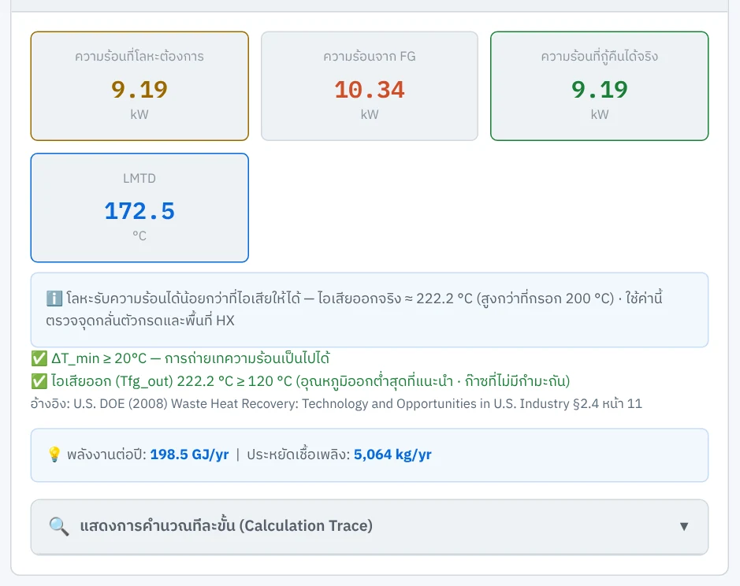
1
2
3
4
1
โลหะต้องการ 9.19 kW
2
ไอเสียให้ได้ 10.34 kW
3
กู้คืนได้จริง 9.19 kW = ค่าที่น้อยกว่า
4
ไอเสียออกจริง ≈ 222.2 °C (สูงกว่าที่กรอก 200 °C)
โลหะรับได้น้อยกว่าที่ไอเสียให้ — ไอเสียจึงเย็นลงไม่ถึง 200 °C · LMTD และพื้นที่ HX คิดจาก 222.2 °C (LMTD 172.5 °C)
ต่อปี 198.5 GJ · ประหยัด LPG 5,064 kg/ปี
ขั้นที่ 5
แท็บ 4 อบแห้งชีวมวลด้วยความร้อนทิ้ง
คู่มือใช้งาน · คำนวณการนำความร้อนทิ้งกลับมาใช้ (WHR) (Waste Heat Recovery (WHR) Calculator) · ระดับ Free
19 / 33
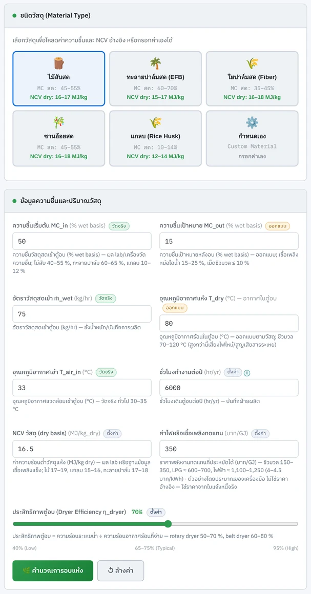
1
2
3
4
5
6
7
8
1
ชนิดวัสดุ — เติมความชื้นและ NCV ตัวอย่าง
2
ความชื้นเข้า (% ฐานเปียก)
3
ความชื้นเป้าหมาย
4
วัสดุสดเข้า kg/hr
5
อุณหภูมิอากาศในตู้อบ
6
NCV วัสดุแห้ง (MJ/kg)
7
ราคาพลังงานที่ทดแทน (บาท/GJ)
8
ประสิทธิภาพตู้อบ
ไม้สับสด 75 kg/hr ความชื้น 50 → 15 % · อากาศอบ 80 °C · ตู้อบ 70 %
ผลอบแห้ง: สองกรณีที่ห้ามบวกกัน
คู่มือใช้งาน · คำนวณการนำความร้อนทิ้งกลับมาใช้ (WHR) (Waste Heat Recovery (WHR) Calculator) · ระดับ Free
20 / 33
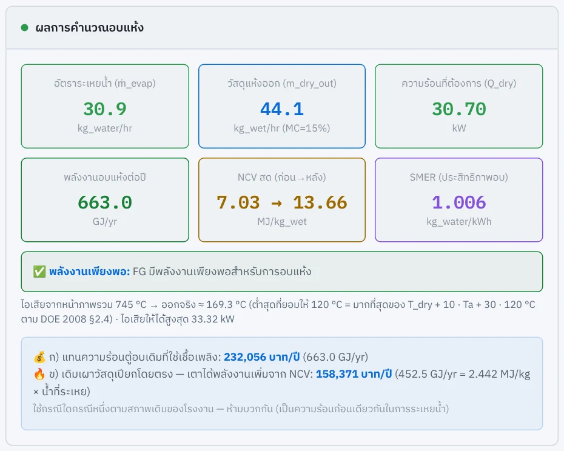
1
2
3
4
5
1
น้ำระเหย 30.9 kg/hr
2
ความร้อนที่ต้องการ 30.70 kW
3
NCV สด 7.03 → 13.66 MJ/kg
4
ไอเสียพอ: ให้ได้สูงสุด 33.32 kW · ออกจริง ≈ 169.3 °C
5
ก) 232,056 บาท/ปี หรือ ข) 158,371 บาท/ปี — เลือกกรณีเดียว
ก) เดิมมีตู้อบใช้เชื้อเพลิง → ความร้อนจากไอเสียมาแทน · ข) เดิมเผาวัสดุเปียกตรง → เตาได้พลังงานเพิ่ม 2.442 MJ ต่อน้ำ 1 kg = 452.5 GJ/ปี
ไอเสียออกจากตู้อบต้องไม่ต่ำกว่าเกณฑ์ไอเสียออกต่ำสุด (LPG 120 °C)
⚠️ ระวัง
สองกรณีคือความร้อนก้อนเดียวกันในการระเหยน้ำ — บวกกันจะนับซ้ำ
ขั้นที่ 6
แท็บ 5 อุ่นน้ำมันร้อน (Hot Oil)
คู่มือใช้งาน · คำนวณการนำความร้อนทิ้งกลับมาใช้ (WHR) (Waste Heat Recovery (WHR) Calculator) · ระดับ Free
21 / 33
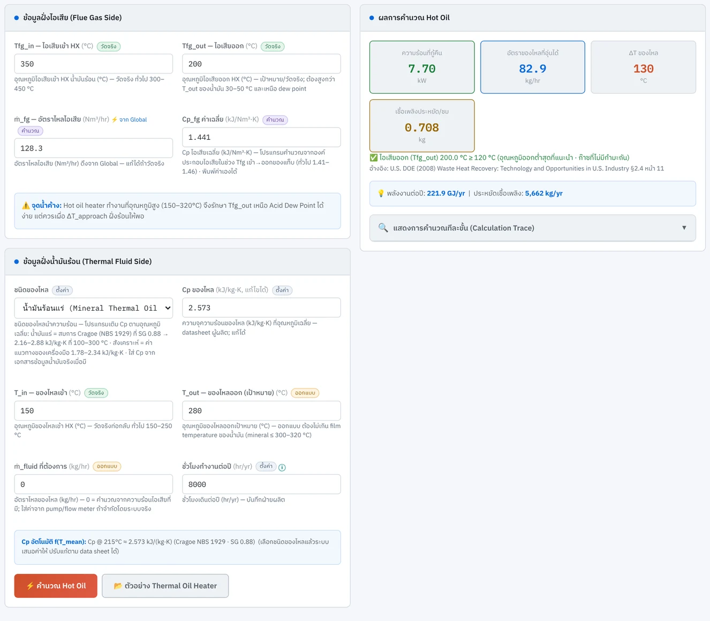
1
2
3
4
5
6
1
ชนิดของไหล — น้ำมันแร่ · สังเคราะห์ · น้ำร้อนความดัน
2
Cp น้ำมันแร่ 2.573 — สมการ Cragoe (NBS 1929) ที่ SG 0.88 · แก้ตามเอกสารข้อมูลน้ำมันจริง
3
น้ำมันเข้า
4
น้ำมันออก (เป้าหมาย)
5
ṁ_fluid — 0 = ให้โปรแกรมหา
6
ความร้อนที่กู้คืน 7.70 kW · น้ำมัน 82.9 kg/hr
น้ำร้อนความดันใช้ Cp จาก IAPWS-IF97 ที่ความดันพอไม่ให้เดือด
น้ำมันออกต้องไม่เกินอุณหภูมิใช้งานสูงสุดของน้ำมัน (ดูเอกสารข้อมูล)
ขั้นที่ 7
แท็บ 6 ผลิตไอน้ำ (HRSG): กรอกข้อมูล
คู่มือใช้งาน · คำนวณการนำความร้อนทิ้งกลับมาใช้ (WHR) (Waste Heat Recovery (WHR) Calculator) · ระดับ Free
22 / 33
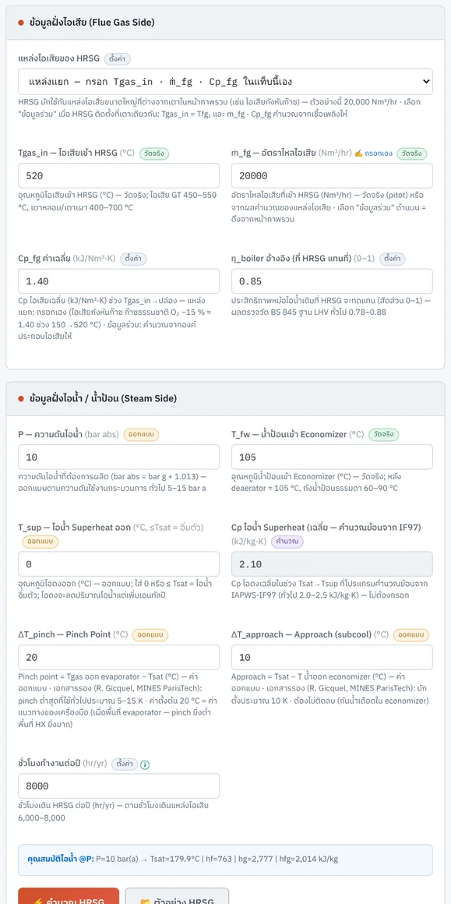
1
2
3
4
5
6
7
8
9
10
1
แหล่งไอเสีย — แยก (กรอกเอง) หรือ ข้อมูลร่วม
2
Tgas_in 520 °C
3
ṁ_fg 20000 Nm³/hr
4
Cp ไอเสีย (แหล่งแยก: กรอกเอง)
5
η หม้อไอน้ำเดิมที่ถูกทดแทน (0–1)
6
ความดันไอน้ำ bar a
7
น้ำป้อน T_fw
8
ไอดง T_sup (0 = อิ่มตัว)
9
Pinch > 0 (ตั้งต้น 20 °C = ค่าแนวทาง · เอกสารรอง 5–15 K)
10
Approach ≥ 0
ตัวอย่างเป็นแหล่งไอเสียใหญ่แยกจากเตา (เช่น กังหันก๊าซ 520 °C) — เลือก "ข้อมูลร่วม" เฉพาะเมื่อ HRSG ติดตั้งที่เตาเดียวกัน
ผล HRSG และโปรไฟล์อุณหภูมิ 3 ส่วน
คู่มือใช้งาน · คำนวณการนำความร้อนทิ้งกลับมาใช้ (WHR) (Waste Heat Recovery (WHR) Calculator) · ระดับ Free
23 / 33
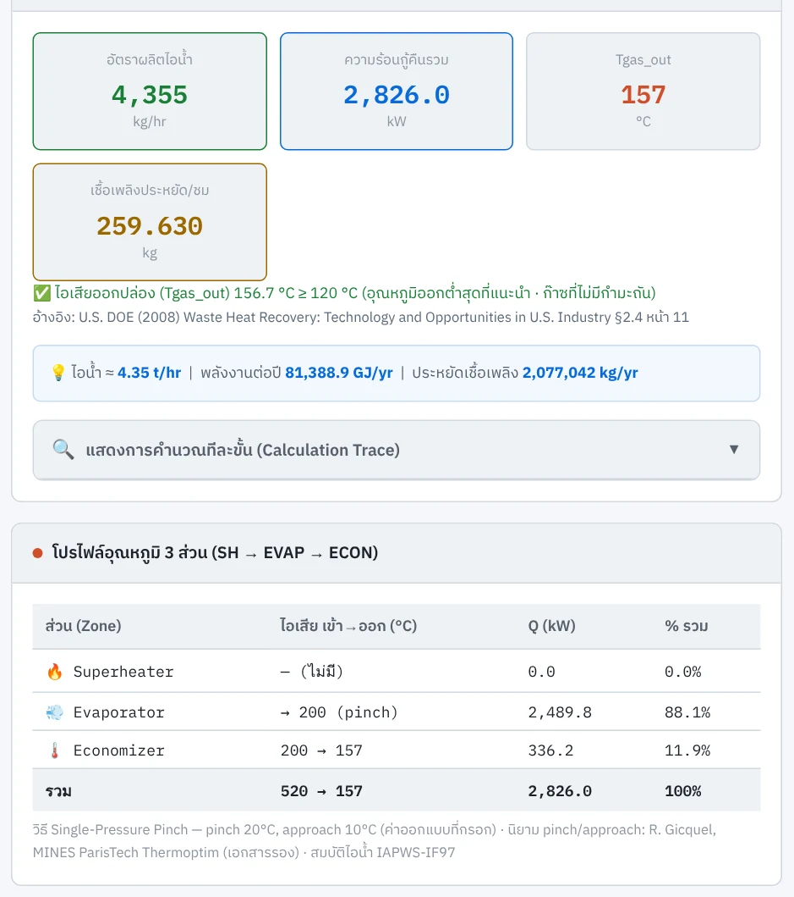
1
2
3
4
1
ไอน้ำ 4,355 kg/hr (4.35 t/hr)
2
Tgas_out 156.7 °C ≥ 120 °C
3
Evaporator 2,489.8 kW (88.1%) — ไอเสียลงถึงจุด pinch
4
Economizer 336.2 kW (11.9%)
Tsat ที่ 10 bar a = 179.9 °C (IAPWS-IF97) → ไอเสียออก evaporator = Tsat + pinch 20 °C
ไอน้ำ = ความร้อนเหนือ pinch ÷ (h ไอน้ำ − h น้ำออก economizer) — ทวนอิสระด้วย iapws ตรงกันทุกหลัก
เครื่องมือหยุดเมื่อ pinch ≤ 0 · approach ติดลบ · น้ำป้อนร้อนเกิน · ไอดงร้อนกว่าไอเสีย · อุณหภูมิไขว้ที่ปลายเย็น
💡 เคล็ดลับ
ความร้อนรวม 2,826.0 kW · ประหยัดเชื้อเพลิงคิดเทียบหม้อไอน้ำเดิม η 0.85
ขั้นที่ 8
สรุปรวม: ติ๊กทุกโหมด → เครื่องมือเตือนนับซ้ำ
คู่มือใช้งาน · คำนวณการนำความร้อนทิ้งกลับมาใช้ (WHR) (Waste Heat Recovery (WHR) Calculator) · ระดับ Free
24 / 33
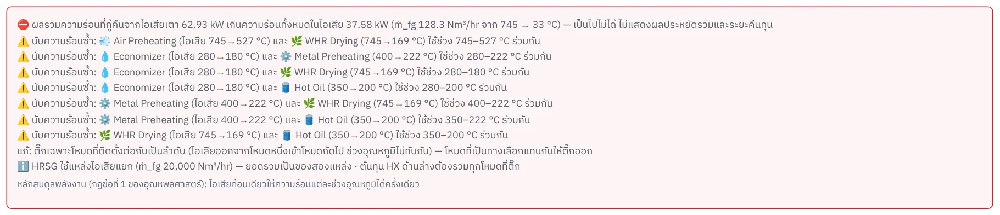
1
2
3
1
⛔ ความร้อนรวม 62.93 kW เกินความร้อนทั้งหมดในไอเสีย 37.58 kW
2
คู่โหมดที่ใช้ไอเสียช่วงเดียวกัน (7 คู่)
3
HRSG แหล่งแยก — นับแยกจากไอเสียเตา
แต่ละแท็บคือทางเลือกที่ใช้ไอเสียเตาเดียวกัน — ติ๊กทุกโหมดจะนับความร้อนช่วงเดียวกันหลายครั้ง
สมดุลไม่ปิด เครื่องมือจึงไม่แสดงผลประหยัดสุทธิ · CO₂ · คืนทุน (—)
⚠️ ระวัง
ติ๊กเฉพาะโหมดที่ติดตั้งต่อกันเป็นลำดับ — ไอเสียออกจากโหมดหนึ่งเข้าโหมดถัดไป ช่วงอุณหภูมิไม่ทับกัน
เลือก Air + อุ่นโลหะ แล้วกรอกพารามิเตอร์มูลค่า
คู่มือใช้งาน · คำนวณการนำความร้อนทิ้งกลับมาใช้ (WHR) (Waste Heat Recovery (WHR) Calculator) · ระดับ Free
25 / 33
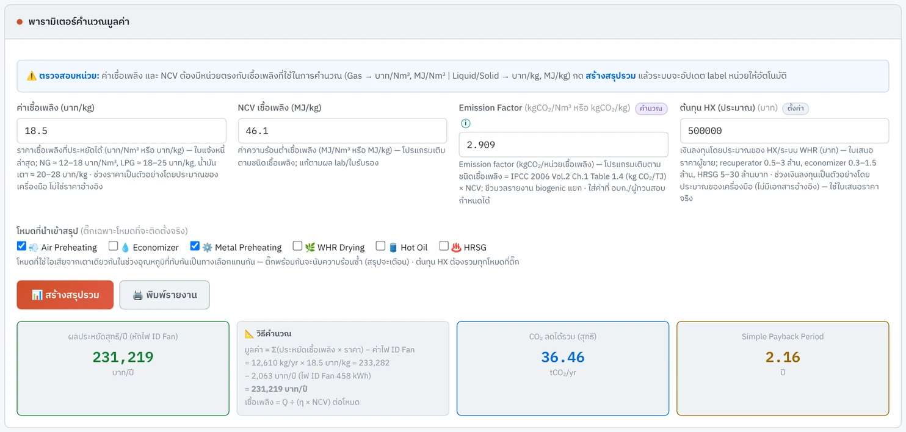
1
2
3
4
5
6
7
8
1
ราคาเชื้อเพลิง (บาท/kg LPG)
2
NCV เชื้อเพลิง
3
EF 2.909 — แก้ได้
4
ต้นทุน HX รวมทุกโหมดที่ติ๊ก
5
ติ๊กโหมดที่นำเข้าสรุป
6
สร้างสรุปรวม
7
ประหยัดสุทธิ 231,219 บาท/ปี
8
คืนทุน 2.16 ปี
ประหยัดสุทธิ = LPG 12,610 kg/ปี × 18.5 = 233,282 − ไฟ ID Fan 2,063 = 231,219 บาท/ปี
คืนทุน = 500,000 ÷ 231,219 = 2.16 ปี · ลด CO₂ สุทธิ 36.46 t/ปี
ตารางสรุปและการตรวจสมดุลพลังงาน
คู่มือใช้งาน · คำนวณการนำความร้อนทิ้งกลับมาใช้ (WHR) (Waste Heat Recovery (WHR) Calculator) · ระดับ Free
26 / 33
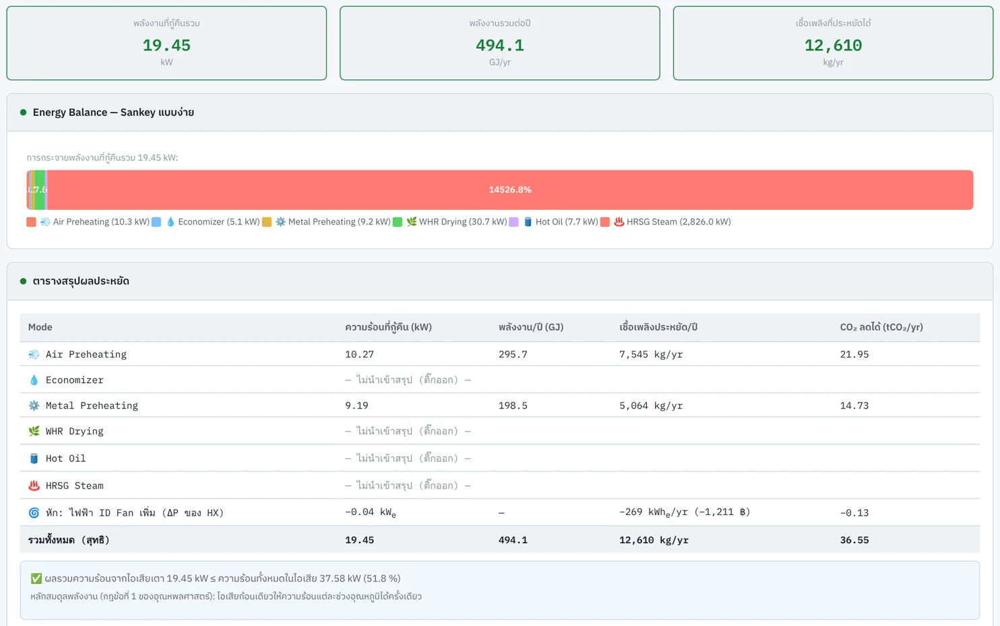
1
2
3
4
5
1
กู้คืนรวม 19.45 kW · 494.1 GJ/ปี
2
Air Preheating
3
อุ่นโลหะ
4
หักไฟ ID Fan ที่เพิ่มจาก HX
5
✅ ใช้ 51.8 % ของความร้อนในไอเสีย (19.45 ≤ 37.58 kW)
โหมดที่ติ๊กออกขึ้นว่า "ไม่นำเข้าสรุป" — ผลของแท็บยังอยู่ ติ๊กกลับได้
CO₂ = เชื้อเพลิงที่ประหยัด × EF − ไฟ ID Fan × 0.4750 kgCO₂/kWh (ค่าไฟฟ้า อบก. 2022–2024)
ลองเปลี่ยนค่า (What-if): การเผาไหม้ จำนวนชั้น และอุณหภูมิไอเสีย
คู่มือใช้งาน · คำนวณการนำความร้อนทิ้งกลับมาใช้ (WHR) (Waste Heat Recovery (WHR) Calculator) · ระดับ Free
27 / 33
| กรณี | อากาศเกิน (%) | ṁ_fg (Nm³/hr) | Q_air (kW) | ใช้ไอเสีย (%) | ประหยัด (บาท/ปี) |
|---|---|---|---|---|---|
| โรงงาน A: O₂ 4.5 % · 1 ชั้น · 745 °C | 25.0 | 128.3 | 10.27 | 51.8 | 231,219 |
| จูนการเผาไหม้ O₂ 3 % | 15.3 | 119.0 | 10.27 | 55.5 | 231,364 |
| Recuperator 2 ชั้น (อากาศ 463 °C) | 25.0 | 128.3 | 18.54 | 73.8 | 344,147 |
| ไอเสียออกเตา 650 °C (ออก Recup 470 °C) | 25.0 | 128.3 | 10.27 | 60.4 | 231,328 |
ทำเอง: แก้ช่องในหน้าภาพรวมหรือแท็บ 1 → อ่านผล → แก้กลับ
O₂ ต่ำลง ไอเสียน้อยลง (119.0 Nm³/hr) — Q_air ไม่เปลี่ยนเพราะคิดจากอุณหภูมิอากาศที่วัด แต่สัดส่วนที่ใช้ไอเสียสูงขึ้น
2 ชั้น: ε 60.4 % · ประหยัด LPG 13,629 kg/ปี · คืนทุน 1.45 ปี (ต้นทุนเท่าเดิม — ใส่ราคาจริงของ 2 ชั้น)
ลองเปลี่ยนค่า (What-if): ข้อความเตือนที่ต้องอ่านให้ออก
คู่มือใช้งาน · คำนวณการนำความร้อนทิ้งกลับมาใช้ (WHR) (Waste Heat Recovery (WHR) Calculator) · ระดับ Free
28 / 33
| กรณี | ผลที่เครื่องมือแสดง | ความหมาย / ควรทำ |
|---|---|---|
| Economizer ไอเสียออก 110 °C | Q 8.57 kW · ⚠️ ต่ำกว่าเกณฑ์ 120 °C | ไอน้ำ/กรดกลั่นตัว — เพิ่มอุณหภูมิออกหรือใช้วัสดุทนกรด |
| HRSG เลือก ข้อมูลร่วม (เตา A) | Tgas_in 745 °C · ṁ_fg 128.3 · ไอน้ำ 51 kg/hr | เตาเล็กผลิตไอน้ำได้น้อย — HRSG เหมาะกับไอเสียแหล่งใหญ่ |
| สรุปรวม ติ๊กทุกโหมด | ⛔ 62.93 kW > 37.58 kW | นับซ้ำ — ติ๊กเฉพาะโหมดที่ติดตั้งต่อกัน |
| HRSG pinch 0 หรือ approach ติดลบ | ⛔ ไม่คำนวณ พร้อมเหตุผล | ไม่มีแรงขับถ่ายเทความร้อน — แก้ค่าออกแบบ |
ทำเอง: เปลี่ยนค่าตามแถว → อ่านข้อความใต้ผล → แก้กลับ
ข้อความ ✅/⚠️ ทุกจุดมีบรรทัด "อ้างอิง" บอกที่มาของเกณฑ์
บันทึกงาน เปิดงานเดิม และปุ่มตัวอย่าง
คู่มือใช้งาน · คำนวณการนำความร้อนทิ้งกลับมาใช้ (WHR) (Waste Heat Recovery (WHR) Calculator) · ระดับ Free
29 / 33
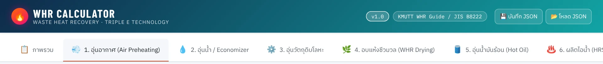
1
2
3
1
บันทึก JSON — ค่าทุกแท็บ รวมชนิด HX ที่เลือกและค่า ID Fan
2
โหลด JSON — เปิดไฟล์เดิมกลับมาทำต่อ
3
แท็บทั้ง 8 — ผลทุกแท็บคำนวณใหม่หลังโหลด
ปุ่ม ตัวอย่าง ในแต่ละแท็บ = คืนค่าตั้งต้นของแท็บนั้น (ค่าเดียวกับตอนเปิดหน้า) แล้วคำนวณให้
หลังโหลด ป้ายแสดงผลตรงกับค่าในไฟล์ — Cp/ความหนาแน่นโลหะ · % ประสิทธิภาพตู้อบ · Cp น้ำมันร้อน · ป้ายชนิดค่า
เตา 1 เตา = ไฟล์ JSON 1 ไฟล์ — ตั้งชื่อตามรหัสเตา · พิมพ์รายงานจากปุ่มพิมพ์ในหน้าสรุปรวม
ข้อผิดพลาดที่พบบ่อย
คู่มือใช้งาน · คำนวณการนำความร้อนทิ้งกลับมาใช้ (WHR) (Waste Heat Recovery (WHR) Calculator) · ระดับ Free
30 / 33
✗ บวกทุกแท็บเข้าด้วยกัน
✓ แท็บเป็นทางเลือก — ติ๊กเฉพาะโหมดที่ต่อกัน
✗ O₂ วัดแบบเปียก
✓ ช่องนี้ใช้ O₂ ไอเสียแห้ง จากเครื่องวิเคราะห์
✗ HRSG ใช้ไอเสียเตาเล็ก
✓ แหล่งแยกต้องกรอก Tgas_in · ṁ_fg · Cp ของแหล่งนั้น
✗ ไอเสียออกต่ำเกิน
✓ ต่ำกว่า 120 / 150 °C เสี่ยงกัดกร่อน
✗ ลืมหักไฟ ID Fan
✓ ใส่ ΔP จริง จากผู้ขาย HX
✗ บวกสองกรณีของอบแห้ง
✓ ก) หรือ ข) — ไม่ใช่ ก) + ข)
✗ η ทดแทนไม่ตรงอุปกรณ์
✓ เตาใช้สัดส่วน available heat · หม้อไอน้ำใช้ผลตรวจวัด
✗ ใช้ต้นทุน HX ตั้งต้น
✓ ใส่ราคาจากใบเสนอราคาจริงก่อนสรุปคืนทุน
แบบฝึกหัด: โรงงาน B Economizer หม้อไอน้ำ
คู่มือใช้งาน · คำนวณการนำความร้อนทิ้งกลับมาใช้ (WHR) (Waste Heat Recovery (WHR) Calculator) · ระดับ Free
31 / 33
| ข้อมูล | ค่า |
|---|---|
| เชื้อเพลิง · อัตราใช้ | ก๊าซธรรมชาติ · 60 Nm³/hr |
| O₂ แห้ง · ไอเสียออกหม้อไอน้ำ | 3 % · 450 °C |
| อากาศ · η หม้อไอน้ำ | 30 °C · 88 % |
| Economizer ไอเสีย | 300 → 140 °C |
| น้ำป้อน | 600 kg/hr · 30 → 70 °C |
| ราคาก๊าซ | 14 บาท/Nm³ |
| สรุปรวม | ติ๊กเฉพาะ Economizer |
คำถาม — กรอกแล้วตอบ
1
อากาศเกิน = ____ % · ṁ_fg = ____ Nm³/hr
2
Q Economizer = ____ kW · ไอเสียออกจริง = ____ °C
3
ประหยัดก๊าซ ____ Nm³/ปี · ____ บาท/ปี
4
ลด CO₂ สุทธิ ____ t/ปี · ไอเสียออกผ่านเกณฑ์หรือไม่?
💡 เคล็ดลับ
เลือกเชื้อเพลิงก่อน แล้วกรอกหน้าภาพรวม → แท็บ 2 → สรุปรวม (ค่าอื่นใช้ค่าตั้งต้น)
เฉลยแบบฝึกหัด โรงงาน B
คู่มือใช้งาน · คำนวณการนำความร้อนทิ้งกลับมาใช้ (WHR) (Waste Heat Recovery (WHR) Calculator) · ระดับ Free
32 / 33
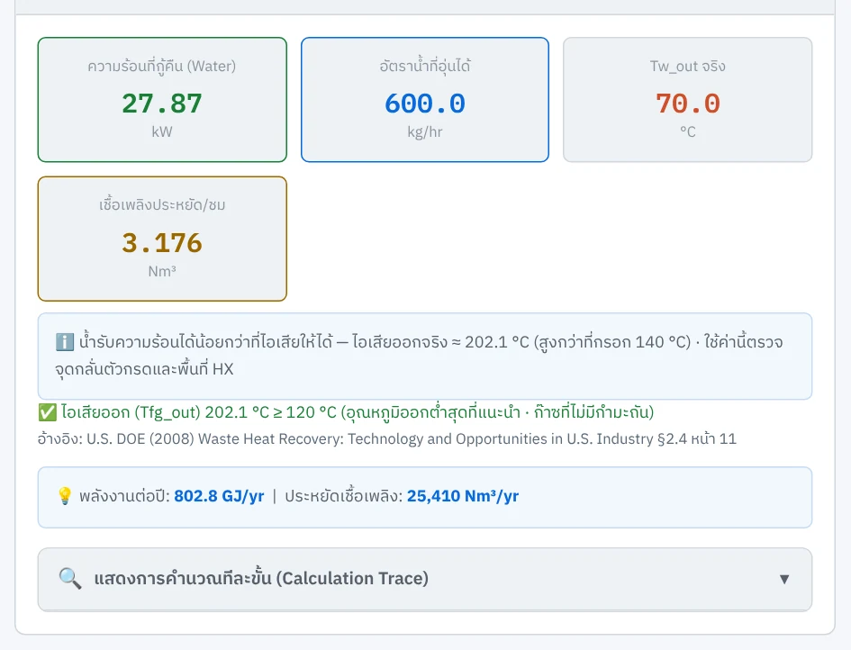
1) อากาศเกิน 15.0 % · ṁ_fg 719.5 Nm³/hr
2) Q 27.87 kW — น้ำ 600 kg/hr รับได้น้อยกว่าที่ไอเสียให้ ไอเสียออกจริง 202.1 °C (ไม่ใช่ 140 °C)
3) ประหยัด 25,410 Nm³/ปี · 349,803 บาท/ปี (หักไฟ ID Fan แล้ว)
4) ลด CO₂ สุทธิ 50.55 t/ปี · ไอเสียออก 202.1 °C ≥ 120 °C — ผ่าน
✓ ผ่าน
ได้ตัวเลขตรงกัน = ใช้เครื่องมือเป็นแล้ว · ถ้าต้องการให้ไอเสียลงถึง 140 °C ต้องเพิ่มปริมาณน้ำที่อุ่น
สรุป 1 หน้า (พิมพ์ติดไว้ข้างคอมพิวเตอร์)
คู่มือใช้งาน · คำนวณการนำความร้อนทิ้งกลับมาใช้ (WHR) (Waste Heat Recovery (WHR) Calculator) · ระดับ Free
33 / 33
1
ภาพรวม
เชื้อเพลิง · อัตราใช้ · O₂ แห้ง · Tfg · Ta · η → ṁ_fg · Cp
2
แท็บ 1 Air
ชั้น · อุณหภูมิไอเสีย/อากาศ · ṁ_air → Q · ε · HX · ID Fan
3
แท็บ 2 Economizer
ไอเสียเข้า/ออก · น้ำเข้า/ออก · ṁ_water (0 = หาให้)
4
แท็บ 3 โลหะ
ชนิด · อัตราป้อน · อุณหภูมิ → ดูไอเสียออกจริง
5
แท็บ 4 อบแห้ง
วัสดุ · ความชื้น · อัตรา → กรณี ก) หรือ ข)
6
แท็บ 5 Hot Oil
ชนิดของไหล · Cp ตามเอกสารข้อมูล · อุณหภูมิ
7
แท็บ 6 HRSG
แหล่งไอเสีย · ความดัน · pinch · approach
8
สรุปรวม
ติ๊กโหมดที่ต่อกัน · ราคา · EF · ต้นทุน → ✅ สมดุล · คืนทุน
อ่านผลแล้วตรวจ
☐
O₂ เป็นค่าไอเสียแห้ง
☐
ไอเสียออก ≥ 120 / 150 °C
☐
ไม่นับความร้อนซ้ำ (✅ ในสรุปรวม)
☐
EF และราคาเชื้อเพลิงล่าสุด
อ.หนึ่ง กลับทวี / Aj. Nueng Klubtavee
tripleeenergytools.com
tripleeenergytools.com